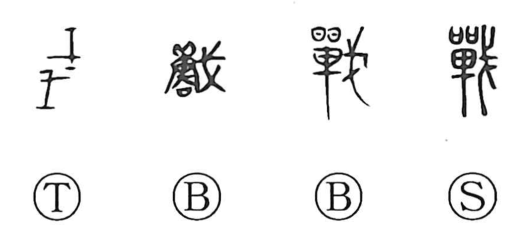

戦

Kun: ikusa, tatakau, tatakai, ononoku | On: sen
war ・ battle ・ to fight ・ to tremble ・ to shudder
Explanation
戦 is the shortened form of 戰, which joins 單 and 戈. 單 represents an oval shield with feather ornaments at its top; 戈 is a shafted weapon with a sideways blade. The fighter holds the shield on the left and the weapon on the right.
This equipment gives fighting, battle, and war. The shield also occurs in the early hunting formation 獸, where hunting and warfare share an armed, organized approach. The two activities belonged to a closely connected practical and ritual setting.
戦 can also mean trembling or shuddering. That use is connected by sound with 顫 and related words for fearful agitation. It is a separate word relationship alongside the graphic scene of combat.